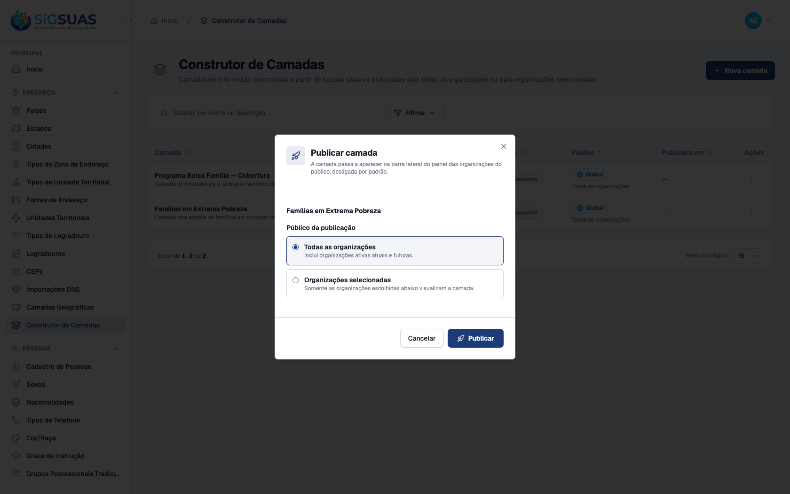
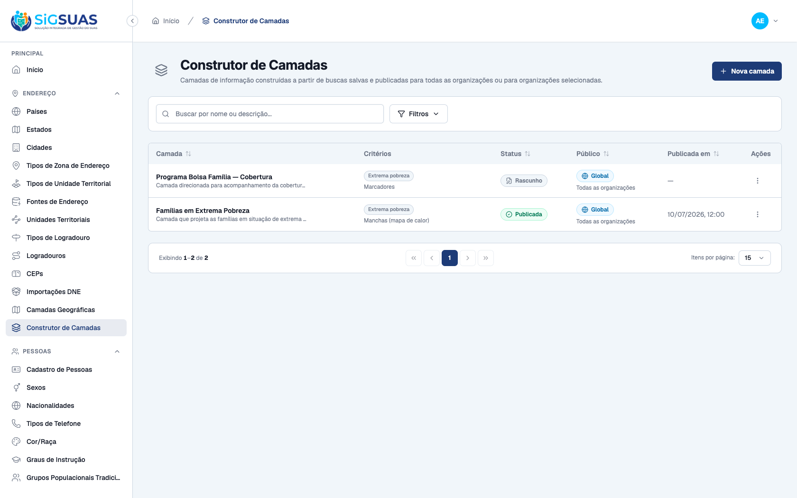
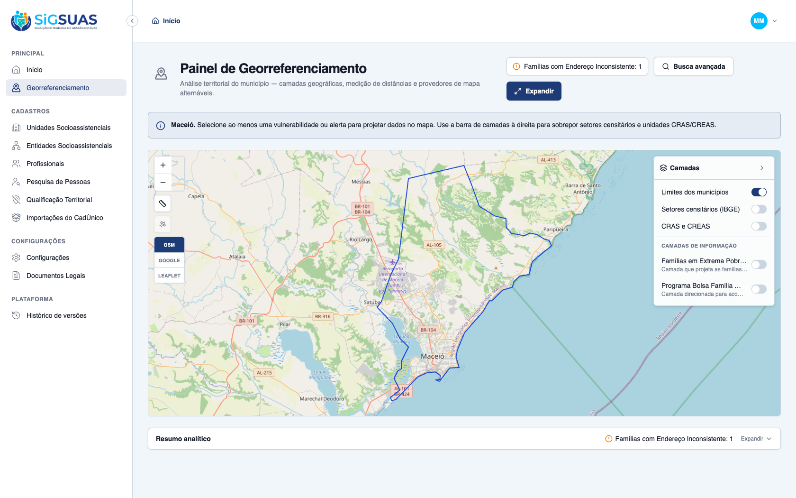
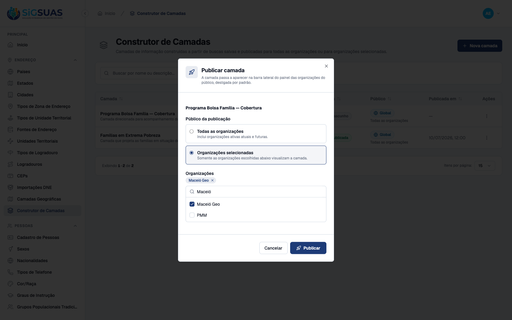
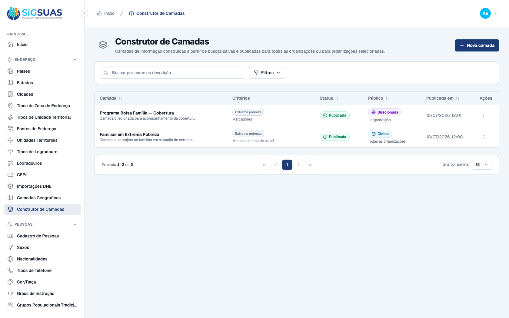
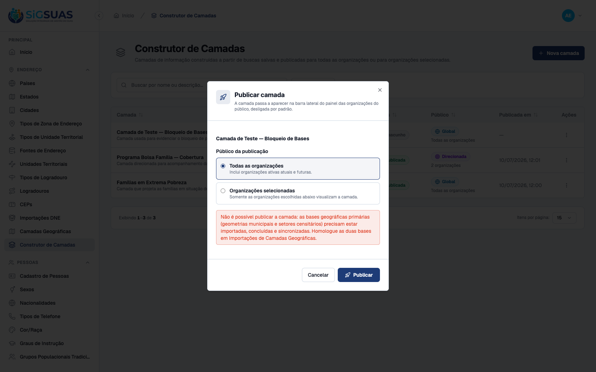
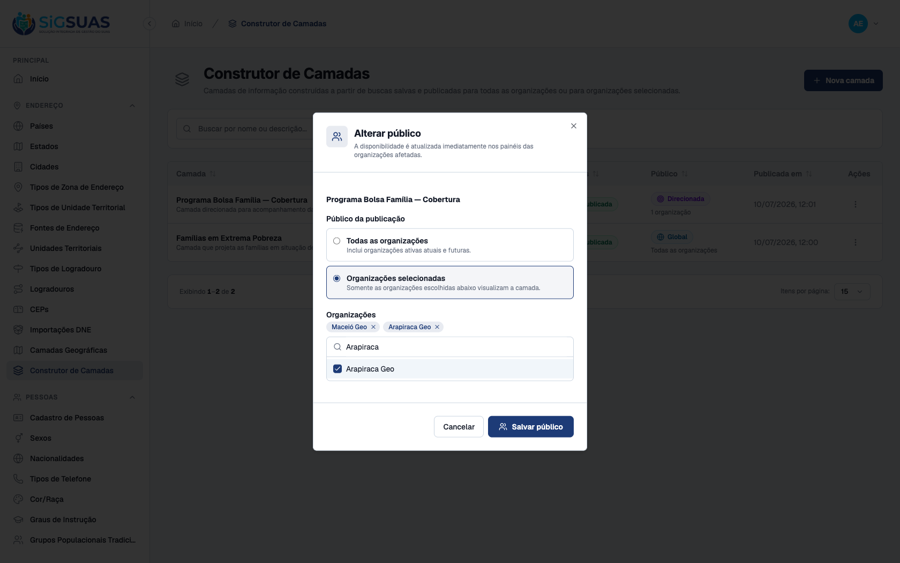
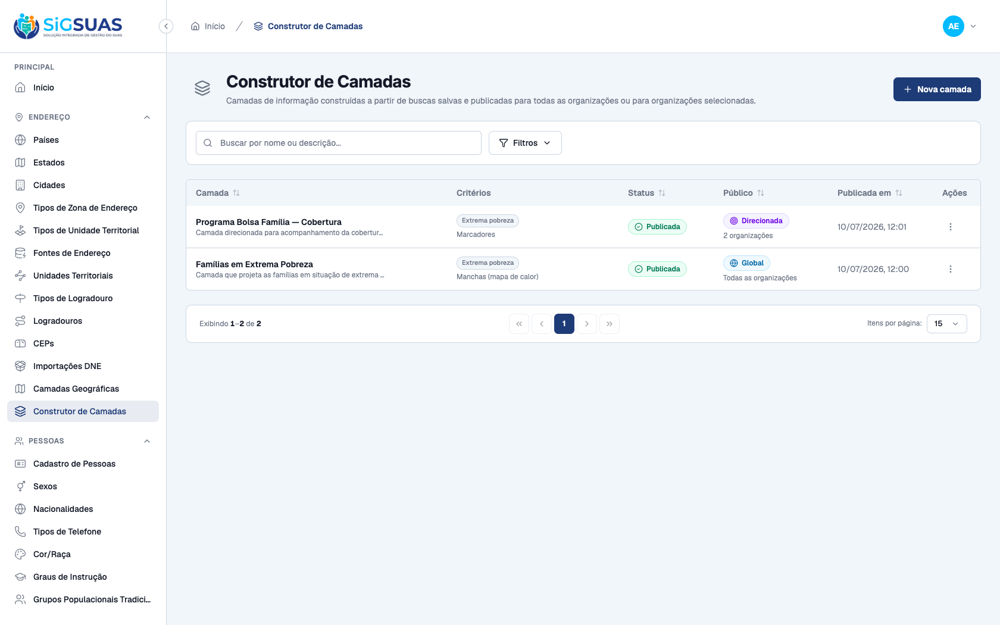
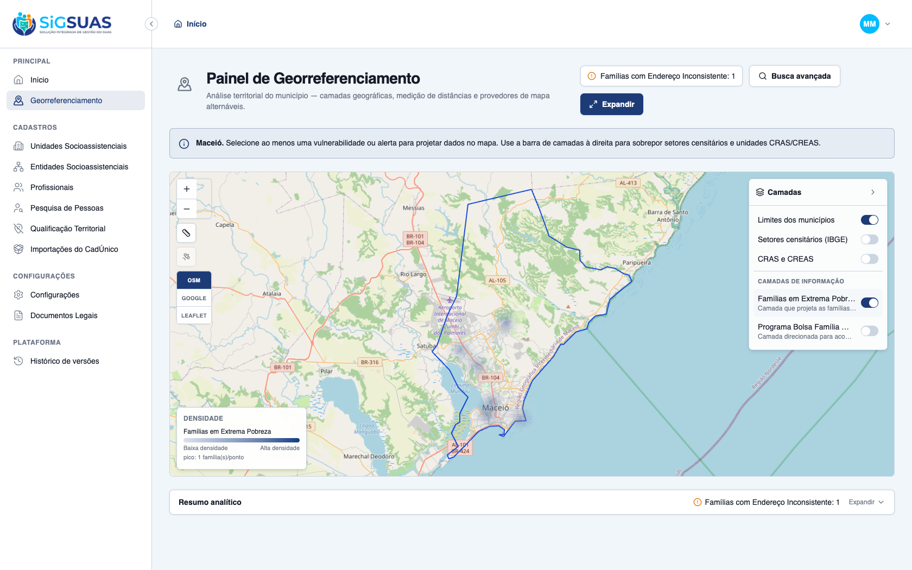

Os 5 critérios de aceite da HU #9884 sobre a publicação de camadas do Construtor de Camadas (rota admin /geo-layers, com efeito no Painel de Georreferenciamento /georreferenciamento do tenant no client) foram verificados dirigindo os apps reais (admin e client) no navegador e reforçados pela suíte automatizada — todos ATENDIDOS. CA42: como Administrador, publicando um rascunho válido com público "Todas as organizações", a camada passa a Publicada/Global (POST /geo-layers/{uuid}/publish, pivot vazio = todos os tenants ativos, inclusive futuros) e aparece na barra lateral do painel de um tenant (Maceió Geo) desligada por padrão. CA43: publicando com "Organizações selecionadas" (Maceió Geo), a camada fica Publicada/Direcionada para 1 organização e somente ela a visualiza. CA44: com as bases geográficas primárias não homologadas (setores censitários fora de completed+synced), a publicação é bloqueada e o diálogo informa a pendência das bases obrigatórias (revalidação RN03 no GeoLayerLifecycleService). CA45: alterando o público de uma camada publicada e direcionada (inclusão de Arapiraca Geo), o pivot é atualizado imediatamente para 2 organizações. CA46: uma camada publicada globalmente, ao ser ligada no painel do tenant, projeta apenas os dados do escopo territorial/cadastral daquele tenant — o isolamento multi-tenant define de quem são os dados. Cobertura automatizada: Pest GeoLayerControllerTest (26 testes/150 asserções) cobre publish global (pivot vazio), publish direcionado (CA43/RN04), exigência da lista de tenants, gate RN03/CA44 (ambas as bases), alteração de público com pivot imediato (CA45) e a não-vazão de outro tenant do mesmo município na projeção (CA46).
| CA | Critério | Status |
|---|---|---|
| CA42 | Publicação global (aparece na barra lateral de todos os tenants, desligada por padrão) | ATENDIDO · navegador |
| CA43 | Publicação direcionada (somente os tenants selecionados) | ATENDIDO · navegador |
| CA44 | Bloqueio sem base geográfica homologada | ATENDIDO · navegador + automatizado |
| CA45 | Alteração de público com efeito imediato | ATENDIDO · navegador |
| CA46 | Isolamento de dados na camada | ATENDIDO · navegador + automatizado |
Critério (Gherkin): Dado que tenho uma camada em rascunho válida, Quando publico com público "todos os tenants", Então a camada passa a aparecer na barra lateral do Painel de Georreferenciamento de todos os tenants ativos, desligada por padrão.
Como foi testado: Como Administrador (44983702016), no Construtor de Camadas → ação Publicar da camada "Famílias em Extrema Pobreza" (rascunho) → público Todas as organizações → Publicar. Em seguida, autenticado no client como Master-geo do tenant Maceió Geo, aberto o Painel de Georreferenciamento → barra Camadas.



Critério (Gherkin): Dado que tenho uma camada em rascunho válida, Quando publico selecionando tenants específicos, Então somente os tenants selecionados passam a visualizar a camada em seus painéis.
Como foi testado: Na ação Publicar da camada "Programa Bolsa Família — Cobertura" (rascunho), selecionado o público Organizações selecionadas e marcada apenas Maceió Geo no multi-select → Publicar.


Critério (Gherkin): Dado que as bases geográficas primárias não estão homologadas, Quando tento publicar uma camada, Então o sistema bloqueia a publicação e informa a pendência das bases obrigatórias.
Como foi testado: Com a base de setores censitários temporariamente fora de completed+synced (desomologada), acionada a publicação de um rascunho → Publicar. (Estado da base restaurado logo após a captura.)

Critério (Gherkin): Dado que uma camada está publicada para tenants específicos, Quando altero o público incluindo ou removendo tenants, Então a disponibilidade da camada é atualizada imediatamente nos painéis dos tenants afetados.
Como foi testado: Na camada "Programa Bolsa Família — Cobertura" (publicada, direcionada a Maceió Geo), ação Alterar público → adicionada Arapiraca Geo ao multi-select (já semeado com Maceió Geo) → Salvar.


Critério (Gherkin): Dado que uma camada foi publicada globalmente, Quando um tenant a liga em seu painel, Então visualiza apenas os dados do seu próprio escopo, sem qualquer dado de outro tenant.
Como foi testado: No painel do tenant Maceió Geo, ligado o switch da camada global "Famílias em Extrema Pobreza" — a projeção é executada no escopo do tenant.

=== Cobertura automatizada — GeoLayerController (CA42-CA46 / RN03-RN08) === (executado ao vivo em 10/07/2026 contra a stack Sail) PASS Tests\Feature\Api\Manager\GeoLayerControllerTest ✓ it creates a layer as draft with normalized criteria and it shows u… 0.45s ✓ it blocks creation without name or without any criterion (CA38) 0.03s ✓ it rejects criteria outside the panel vocabulary (P3) 0.02s ✓ it blocks a duplicated name case-insensitively, but frees it after… 0.03s ✓ it filters the catalog by status and audience (CA51) 0.04s ✓ it shows the layer detail with audience tenants and the full audit… 0.04s ✓ it updates the current definition of a published layer (CA47) 0.02s ✓ it keeps the unique name rule on update, ignoring the layer itself… 0.03s ✓ it does not expose DELETE — the missing verb answers 405 (P5/RN06) 0.02s ✓ it blocks publish while BOTH national bases are not homologated (CA… 0.03s ✓ it publishes globally: empty pivot means every active tenant, prese… 0.03s ✓ it publishes to selected tenants only (CA43/RN04) 0.03s ✓ it requires the tenant list when publishing to a selected audience 0.03s ✓ it rejects publishing a layer that is not a draft (RN06) 0.02s ✓ it changes the audience of a published layer with immediate pivot s… 0.03s ✓ it only allows changing the audience of published layers (RN06) 0.02s ✓ it inactivates a published layer and rejects invalid transitions (C… 0.03s ✓ it reactivates an inactive layer back to the CONFIGURED audience (C… 0.03s ✓ it revalidates the RN03 gate on reactivation (CA44/CA49) 0.02s ✓ it rejects reactivating a layer that is not inactive (RN06) 0.03s ✓ it previews the layer under the single reference tenant — WYSIWYG,… 0.06s ✓ it never leaks another tenant of the same municipality into the pre… 0.05s ✓ it rejects the preview when the reference tenant has no homologated… 0.02s ✓ it requires a valid tenant_uuid on preview 0.02s ✓ it gives the admin_operador read-only access — every write is 403 (… 1.08s ✓ it gives the ADMIN every geo-layers ability through the automatic h… 1.05s Tests: 26 passed (150 assertions) Duration: 3.68s